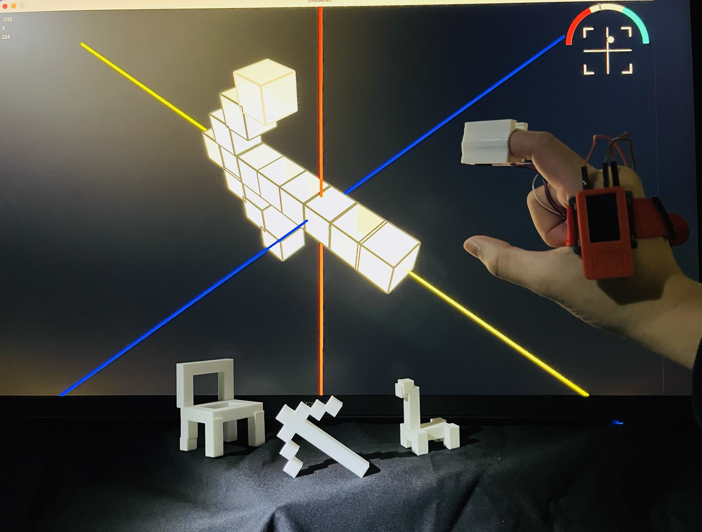

これくらいデバイス


- M5stickC Plus
- Processing
- 3Dプリンター
- 赤外線距離センサー
- ジャイロセンサー
メディア学者マーシャル・マクルーハンの言葉「数は触覚の拡張であり、身体的な起源を持つ」から着想を得て、
単位によって失われつつある数の身体性を取り戻す装置「これくらいデバイス」を制作した。
現代では、身体を基準とした尺度（尺、歩、手幅など）を使う機会が減り、 グローバルな標準単位による数値が日常に溶け込んでいる。
本作品は、人間が行う「これくらい」というジェスチャーを入力として扱うことで、 人それぞれの身体感覚に基づいた直感的なスケール入力を可能にする。
デバイスには距離センサーとIMU（慣性計測ユニット）を搭載し、 指同士の距離と傾きを計測する。
さらに、アプリケーション例として、ジェスチャによって3Dモデリングを行うアプリケーション 「これくらいモデラー」を開発した。 利用者は「これくらい」のジェスチャを使用したモデリングが可能であり、椅子や恐竜、文字などの立体をモデリングすることができる。 この作品は、身体的な感覚とデジタル空間のスケールの再接続を目指している。
本研究は学部卒業研究として実施した。
現代では、身体を基準とした尺度（尺、歩、手幅など）を使う機会が減り、 グローバルな標準単位による数値が日常に溶け込んでいる。
本作品は、人間が行う「これくらい」というジェスチャーを入力として扱うことで、 人それぞれの身体感覚に基づいた直感的なスケール入力を可能にする。
デバイスには距離センサーとIMU（慣性計測ユニット）を搭載し、 指同士の距離と傾きを計測する。
さらに、アプリケーション例として、ジェスチャによって3Dモデリングを行うアプリケーション 「これくらいモデラー」を開発した。 利用者は「これくらい」のジェスチャを使用したモデリングが可能であり、椅子や恐竜、文字などの立体をモデリングすることができる。 この作品は、身体的な感覚とデジタル空間のスケールの再接続を目指している。
本研究は学部卒業研究として実施した。